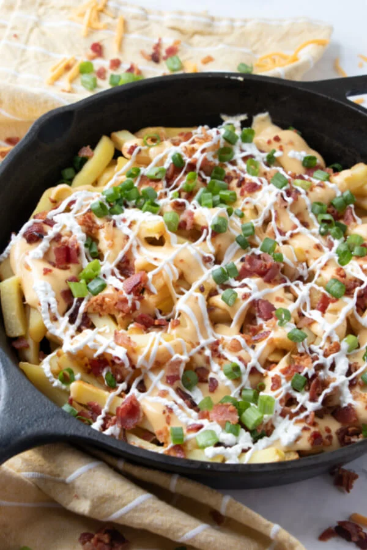

Loaded Bacon and Cheese Fries

You've been waiting for these
What's better than a plate of nice, crispy french fries?
A plate of nice,crispy fries with cheese and bacon! Salads are great but sometimes we just need
some gooey cheesy goodness in our lives. This dish is a perfect starting point for the best meal ever.
The crowd is going to go wild when they see you walking into the dining room with this skillet.
They are going to have a hard time leaving room for the rest of the meal. Okay enough reading, get to cooking!
Ingredients
- Frozen french fries
- Cheese sauce
- Bacon
- Green onions
- Sour cream
- Butter
- All-purpose flour
- Milk
- Cheddar cheese
- Salt and pepper to taste
Instructions
- Bake the french fries according to package directions.
- Meanwhile, prepare the cheese sauce. In a small saucepan, melt the butter. Whisk in the flour. Cook and
continue to whisk for a minute. Slowly add the milk. Continue to cook and stir until the mixture thickens slightly
– about 5 minutes. Remove from the heat and stir in cheese until completely melted and thoroughly combined. Season with salt and pepper.
- After the fries come out of the oven, immediately drizzle with cheese sauce. Sprinkle with bacon. Drizzle with sour cream. Sprinkle with green onions.
- Serve immediately!